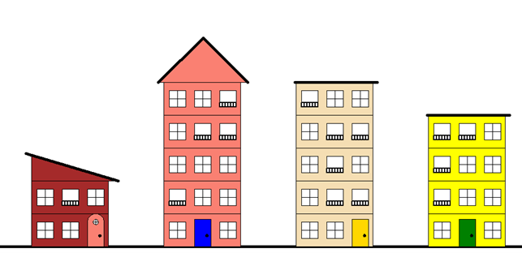
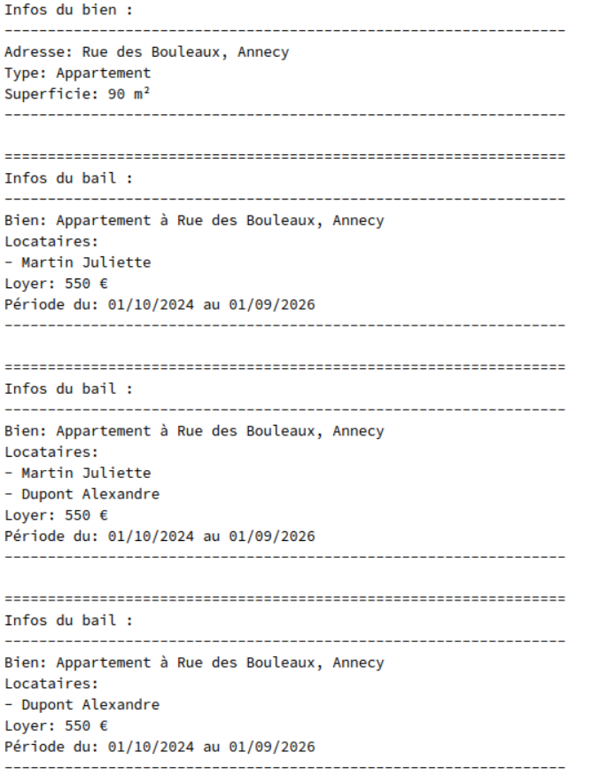
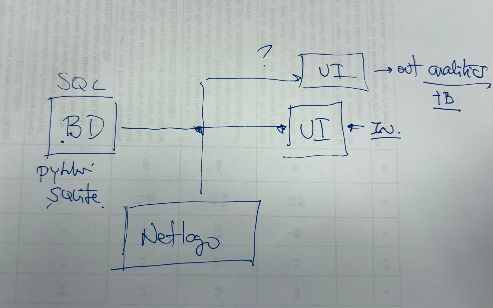

Projet 1 : Programmation immeubles aléatoire
Description du projet :
 Génération aléatoire d'une rue d'immeubles avec PythonObjectif
Créer un programme capable de générer aléatoirement le dessin d'une rue composée de 4 immeubles différents en utilisant le module Turtle de Python. Le projet s'appuie principalement sur la Programmation Orientée Objet (POO) et l'utilisation de plusieurs modules pour structurer le code.
Cahier des charges
- Structure des immeubles : entre 1 rez-de-chaussée et 4 étages, avec une largeur fixe de 140 pixels.
- Éléments visuels :
- Rez-de-chaussée avec une porte unique.
- Étages comprenant des fenêtres identiques (30x30 pixels).
- Toits variés : plat, isocèle ou triangle rectangle.
- Couleur de façade uniforme et générée aléatoirement.
- Dimensions : chaque niveau mesure 60 pixels de hauteur.
- Modules principaux :
- Main : programme principal qui génère la rue en assemblant les immeubles.
- Immeuble : module pour créer chaque immeuble avec ses caractéristiques (hauteur, couleur, toit, etc.).
- Toit, Étage, Fenêtres, Balcons : modules séparés pour définir les différents éléments des immeubles.
- Coordination d'équipe : Répartition des tâches et communication via Discord, Instagram et Google Drive.
- Ajustement des dimensions des toits (notamment les triangles).
- Gestion des paramètres liés aux couleurs dans certains modules.
- Gestion d’un projet en équipe, en répartissant efficacement les tâches.
- Mise en œuvre de la POO et des modules Python pour structurer un projet collaboratif.
- Utilisation avancée du module Turtle pour la création graphique.
Projet 2 : Système de gestion de biens immobilier
Description du projet :
Gestion d'un parc immobilier avec Pharo (Smalltalk)
ObjectifDévelopper une application en Programmation Orientée Objet (POO) avec Pharo (Smalltalk) pour afficher et gérer un parc immobilier, incluant les biens, les baux, et les locataires associés.
Fonctionnalités principales
- Gestion des biens immobiliers :
- Enregistrement des propriétés avec leurs caractéristiques (adresse, type, superficie).
- Gestion des baux :
- Association des locataires à un bien spécifique.
- Suivi des périodes de location (dates de début et de fin).
- Affichage du loyer et des informations liées au bail.
- Affichage des données :
- Présentation claire et structurée des informations :
- Détails des biens (adresse, type, superficie).
- Détails des baux (locataires, loyer, période).
- Structuration d’un projet en POO avec Pharo.
- Gestion des relations entre classes (par exemple, relations entre biens, baux et locataires).
- Organisation des données pour un affichage compréhensible et ergonomique.
Projet 3: Interface Python pour la Gestion d’une Chaîne de Production avec NetLogo (En cours)
Contexte
Dans une usine, la production d’un produit passe par plusieurs étapes, gérées par des machines qui doivent être optimisées pour fonctionner efficacement. NetLogo, un logiciel de simulation multi-agents, permet déjà de modéliser cette production et son optimisation.
L’objectif du projet est de créer une interface en Python qui permettra de piloter cette simulation NetLogo plus facilement, d’enregistrer les données de production dans une base de données, puis d’afficher un tableau de bord avec des indicateurs clés.
Objectifs du projet
- Contrôler la production via une interface Python
- Définir les paramètres de production (quantité, couleur du produit, etc.).
- Lancer et arrêter la production depuis l’interface.
- Échanger des données avec NetLogo
- Envoyer des commandes depuis Python à NetLogo.
- Récupérer les données de production générées par NetLogo.
- Stocker les données dans une base de données SQL
- Enregistrer les informations de production (quantité produite, temps de fabrication, erreurs…).
- Créer un tableau de bord interactif
- Afficher des indicateurs clés (production totale, efficacité des machines, taux d’erreur…).
- Générer des graphiques pour mieux visualiser les performances de production.
Technologies utilisées
- NetLogo : Simulation et optimisation de la production.
- Python : Interface utilisateur et communication avec NetLogo.
- pyNetLogo : Bibliothèque permettant d’envoyer des commandes de Python à NetLogo.
- SQLite / MySQL : Base de données pour stocker les données de production.
- Tkinter / Streamlit : Interface graphique pour piloter la production.
- Matplotlib / Plotly : Visualisation des données sous forme de graphiques.
Grandes étapes du projet
- Connexion entre Python et NetLogo
- Charger et contrôler la simulation depuis Python.
- Modifier les paramètres de production à distance.
- Développement de l’interface utilisateur
- Interface simple permettant de choisir les paramètres et de démarrer la production.
- Enregistrement des données en base SQL
- Stockage automatique des résultats de production.
- Affichage des indicateurs et graphiques
- Tableau de bord pour suivre la production en temps réel.
Finalité du projet
Grâce à cette interface, il sera possible de piloter facilement la production, de suivre les performances des machines et d’analyser les données pour optimiser la chaîne de production. Cette approche est utile pour des entreprises souhaitant améliorer leur processus industriel via la simulation et l’analyse des données.